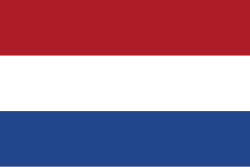

Countries
list of armies
-
France
 France was one of the largest military powers to come under occupation as part of the Western Front in World War II. The Western Front was a military theatre of World War II encompassing Denmark, Norway, Luxembourg, Belgium, the Netherlands, the United Kingdom, France, Italy, and Germany. The Western Front was marked by two phases of large-scale combat operations.
France was one of the largest military powers to come under occupation as part of the Western Front in World War II. The Western Front was a military theatre of World War II encompassing Denmark, Norway, Luxembourg, Belgium, the Netherlands, the United Kingdom, France, Italy, and Germany. The Western Front was marked by two phases of large-scale combat operations. -
Belgium
 Despite being neutral at the start of World War II, Belgium and its colonial possessions found themselves at war after the country was invaded by German forces on 10 May 1940. After 18 days of fighting in which Belgian forces were pushed back into a small pocket in the north-west of the country, the Belgian military surrendered to the Germans, beginning an occupation that would endure until 1944. The surrender of 28 May was ordered by King Leopold III without the consultation of his government and sparked a political crisis after the war. Despite the capitulation, many Belgians managed to escape to the United Kingdom where they formed a government and army-in-exile on the Allied side.
Despite being neutral at the start of World War II, Belgium and its colonial possessions found themselves at war after the country was invaded by German forces on 10 May 1940. After 18 days of fighting in which Belgian forces were pushed back into a small pocket in the north-west of the country, the Belgian military surrendered to the Germans, beginning an occupation that would endure until 1944. The surrender of 28 May was ordered by King Leopold III without the consultation of his government and sparked a political crisis after the war. Despite the capitulation, many Belgians managed to escape to the United Kingdom where they formed a government and army-in-exile on the Allied side. -
Netherland
 Despite Dutch neutrality, Nazi Germany invaded the Netherlands on 10 May 1940 as part of Fall Gelb (Case Yellow).[1] On 15 May 1940, one day after the bombing of Rotterdam, the Dutch forces surrendered. The Dutch government and the royal family relocated to London. Princess Juliana and her children sought refuge in Ottawa, Canada until after the war.
-
Deutschland
Germany rapidly conquered much of Europe and the Soviet Union from 1939 to 1942. Soviet victories over German forces reversed the course of the war in 1942–43. With the Allies advancing from both the east and west, Germany surrendered in 1945. German troops parade through Warsaw after the German invasion of Poland.
-
Denmark
At the outset of World War II in September 1939, Denmark declared itself neutral, but that neutrality did not prevent Nazi Germany from occupying the country almost immediately after the outbreak of war; the occupation lasted until Germany's defeat. The decision to occupy Denmark was taken in Berlin on 17 December 1939.[1] On 9 April 1940, Germany occupied Denmark in Operation Weserübung.
-
Poland
 Following the German–Soviet non-aggression pact, Poland was invaded by Nazi Germany on 1 September 1939 and by the Soviet Union on 17 September. The campaigns ended in early October with Germany and the Soviet Union dividing and annexing the whole of Poland.
Following the German–Soviet non-aggression pact, Poland was invaded by Nazi Germany on 1 September 1939 and by the Soviet Union on 17 September. The campaigns ended in early October with Germany and the Soviet Union dividing and annexing the whole of Poland.